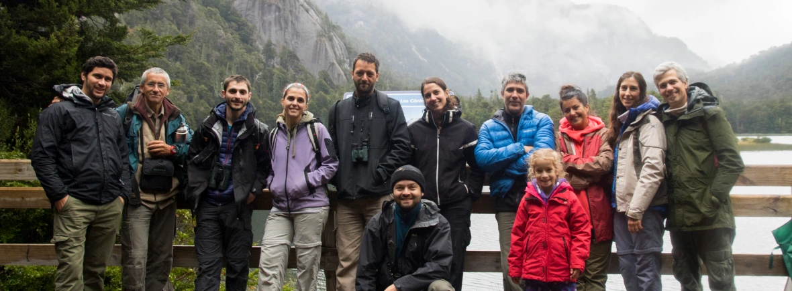

<!DOCTYPE html>
<html lang="es"></html>
    <head>
        <meta charset="UTF-8">
        <meta http-equiv="X-UA-Compatible" content="IE=edge">
        <meta name="viewport" content="width=device-width, initial-scale=1.0">
        <link rel="icon" type="image/x-icon" href="https://www.flaticon.es/icono-gratis/biodiversidad_8167914?term=biodiversidad&page=1&position=15&origin=search&related_id=8167914">
        <link href="https://cdn.jsdelivr.net/npm/bootstrap@5.0.2/dist/css/bootstrap.min.css" rel="stylesheet" integrity="sha384-EVSTQN3/azprG1Anm3QDgpJLIm9Nao0Yz1ztcQTwFspd3yD65VohhpuuCOmLASjC" crossorigin="anonymous">
        <link rel="stylesheet" href="../GrinBic_CamilaLambertucci/css/styles.css">
        <title>GrInBiC</title>
    </head>
             <!-- Empieza el header -->
    <body class="body">
         <header class="sticky-top">
            <nav>
                <ul class="ulNavegacion">
                    <div class="div_header">
                        <a href="./index.html"></a>                       
                    </div>
                <li class="listaMenu"><a href="#">Inicio</a></li>
                <li class="listaMenu"><a href="./pages/integrantes.html">Integrantes</a></li>
                <li class="listaMenu"><a href="./pages/publicaciones.html">Publicaciones</a></li>
                <li class="listaMenu"><a href="./pages/proyectos.html">Proyectos</a></li>
                <li class="listaMenu"><a href="./pages/contacto.html">Contacto</a></li>
            </ul class="ul_nav">

                
            </nav>

        </header>
                 <!-- Termina el header -->
                          <!-- Empieza el Main -->
        <main>
              <!-- Acá va a ir un carrousel de fotos -->
              <div id="carouselExampleControls" class="carousel slide" data-bs-ride="carousel"> <!--slide es la clase que le da la transicion al slide-->
                <div class="carousel-inner">
                  <div class="carousel-item active">
                    <a href="./pages/integrantes.html"></a>
                  </div>
                  <div class="carousel-item">
                    
                  </div>
                  <div class="carousel-item">
                    
                  </div>
                </div>
                <button class="carousel-control-prev" type="button" data-bs-target="#carouselExampleControls" data-bs-slide="prev">
                  <span class="carousel-control-prev-icon" aria-hidden="true"></span>
                  <span class="visually-hidden">Previous</span>
                </button>
                <button class="carousel-control-next" type="button" data-bs-target="#carouselExampleControls" data-bs-slide="next">
                  <span class="carousel-control-next-icon" aria-hidden="true"></span>
                  <span class="visually-hidden">Next</span>
                </button>
              </div>
    </div>

            <div class="box">
                <p class="p_main">Somos investigadores, becarios, estudiantes y personal de apoyo trabajando en las dependencias del INIBIOMA (Instituto de Investigaciones en Biodiversidad y Medioambiente), un instituto de bipertenencia entre  CONICET – Argentina (Consejo Nacional de Investigaciones Científicas y Técnicas) y la Universidad Nacional del Comahue. Nuestro lugar de trabajo se encuentra en el Laboratorio Ecotono en la ciudad de San Carlos de Bariloche, Río Negro, Argentina.</p> 

                  <p class="p_main"> Somos un grupo interdisciplinario de trabajo con intereses de investigación centrados principalmente en la conservación de la diversidad biológica.</p>
             
              </div>
              <div class="video">
                <iframe width="560" height="315" src="https://www.youtube.com/embed/-7A1dz8QOoo" title="YouTube video player" frameborder="0" allow="accelerometer; autoplay; clipboard-write; encrypted-media; gyroscope; picture-in-picture; web-share" allowfullscreen></iframe>
            </div>
            

        </main>
                 <!-- Termina el main -->
                          <!-- Empieza el footer -->
            <footer >
               
             
                   

                    <ul class="ulNaveFooter">
                        <div class="divRedes">
                            <a href="https://www.instagram.com/grinbic/?next=%2F" target="_blank">Instagram</a>
                            <a href="https://www.facebook.com/GrInBiC" target="_blank">Facebook</a>
                            <a href="https://www.youtube.com/@grinbicinibioma-uncoma5567" target="_blank">Youtube</a>
                            </div>
                        <li class="listaFooter"><a href="./pages/integrantes.html">Integrantes</a></li>
                        <li class="listaFooter"><a href="./pages/publicaciones.html">Publicaciones</a></li>
                        <li class="listaFooter"><a href="./pages/proyectos.html">Proyectos</a></li>
                        <li class="listaFooter"><a href="./pages/contacto.html">Contactanos</a></li>
                        <p>©️Copyright 2023 - Desarrollado por Camila</p>
                    </ul>
                </div>
            </footer>
             <!-- Termina el footer -->
        </body>
</html>